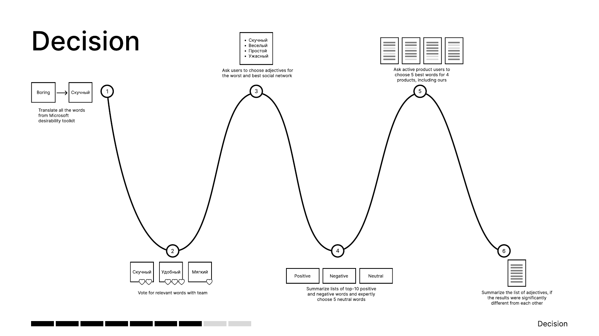

01 / 02
VK · 2023 · Research method
Finding a language for how a product feels
Adapting and testing a desirability toolkit for a Russian-language social platform.
Read case
UX research / product discovery
I look for the gap between how a product is meant to work and how people actually use it.
Today I lead discovery across seven delivery product teams at Avito. Before that, I researched social products at VK and customer support experiences at Sberbank.
Selected workBoth studies were completed at VK: one developed a research method; the other traced a usability problem through a creator flow.
VK · 2023 · Research method
Adapting and testing a desirability toolkit for a Russian-language social platform.
Read case
VK · 2022 · Evaluative research
Interviews and task-based observation revealed where the in-app editing flow misled creators.
Read case
My background is in social psychology and human–computer interaction. For more than six years, I’ve studied how people use products across social platforms, customer support and marketplaces.
I work with interviews, usability studies, surveys and the signals customers already leave behind. I’ve also led qualitative and quantitative research with agencies, and mentor UX researchers and product managers on discovery processes.
Based in Vienna. Previously at VK, Sberbank and EdTech.